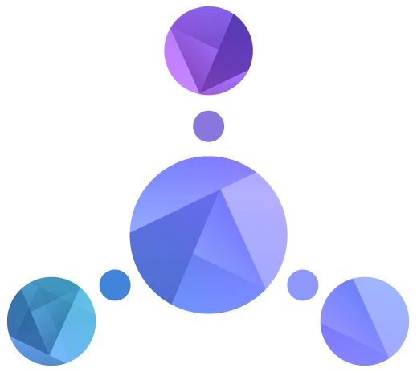

-
SWAGGER

Ele é de código aberto e possibilita aos desenvolvedores e equipes criar, documentar e utilizar
APIs em RESTful.
O Swagger é capaz de ajudar desenvolvedores de APIs REST a:
- Modelar APIs;
- Gerar documentação automatizada da API;
- Gerar códigos do cliente e do servidor, suportando diversas linguagens de programação;
- Testar funcionalidades da API.
Para executar essas atividades, o Swagger requer a definição da OpenAPI, que é uma linguagem
usada para descrever os contratos das APIs REST. A OpenAPI estabelece um formato JSON com campos
consistentes, permitindo que o usuário descreva os recursos, os modelos de dados, as URIs, os
tipos de conteúdo e os métodos HTTP aceitos.
Além da OpenAPI, o Swagger dispõe um conjunto de ferramentas e as principais são:
- Swagger Editor
- Swagger UI
- Swagger Codegen
O módulo de UI permite que desenvolvedores interajam intuitivamente com as APIs em sandbox.
Enquanto isso, o Editor é uma ferramenta online que permite uma documentação mais interativa,
utilizando YAML. Uma vantagem do Editor é sua coleção de modelos de documentos que oferecem uma
base para aqueles que não querem começar do zero na documentação.
A documentação para APIs pode ser feita de três formas:
-
Manualmente:
o desenvolvedor escreve livremente as especificações da API e as publica posteriormente
em seu próprio servidor.
-
Automaticamente:
simultaneamente ao desenvolvimento da API é gerada a documentação.
-
Codegen:
converte todas as anotações contidas no código fonte das APIs REST em documentação.
-
API BLUEPRINT

É uma linguagem de descrição e especificação de APIs que utiliza Markdown, simplificando
a edição para usuários não familiarizados com códigos. A maioria de suas ferramentas são
de código aberto, visando agilizar o processo de criação e prototipagem de APIs, assim
como documentar e testar APIs já em uso de forma eficiente.
A documentação nesse caso mostra:
- Atributos listados com suas descrições;
- Exemplos de solicitações;
- Respostas desses exemplos.
No caso do Blueprint, duas são as ferramentas integradas a ele que se destacam:
-
Dredd
A ferramenta possibilita a realização de testes no serviço de back-end com base
na documentação da API, o que ajuda a resolver problemas de desatualização dessa
documentação. Além disso, ela oferece suporte para uma variedade de linguagens,
incluindo PHP, Python, Ruby, Perl, Node.js e Go.
-
Drakov
Facilita o início e teste de serviços simulados, onde as solicitações e
respostas são ajustadas de acordo com a documentação da API, funcionando
como um ambiente de testes.
-
RAML
O RAML oferece opções de documentação de APIs com ferramentas open source,
como o Console da API e o HTML RAML 2. A rápida geração de documentação é
facilitada por analisadores disponíveis em vários idiomas, permitindo a
criação de documentos personalizados e scripts interativos. O formato base
o RAML é YAML, mas também é compatível com outros padrões como JSON e é
neutro em relação a ferramentas de linguagem, como Java, Javascript, .Net,
PHP, Python e Ruby. No entanto, o uso do RAML pode ter desvantagens,
especialmente se a API não seguir os princípios RESTful ou se não for baseada
em HTTP. Além disso, o YAML é voltado para desenvolvedores, o que pode
dificultar para equipes sem conhecimentos técnicos criarem APIs ou
documentações sem o uso de ferramentas de design adequadas.
-
Referências
O que é API?. Red Hat, 2023. Disponível em:
<https://www.redhat.com/pt-br/topics/api/what-are-application-programming-interfaces>.
Acesso em: 28 fev. 2024.
RUIZ, David. Conheça as 3 principais ferramentas de documentação de APIs. API Playbook, 2020. Disponível em:
<https://www.apiplaybook.com/p/conheca-as-3-principais-ferramentas-de-documentacao-de-apis>.
Acesso em: 28 fev. 2024.
Figura 1
Fonte: FREEPIK
Disponível em:
<https://img.freepik.com/free-vector/hand-drawn-flat-design-api-illustration_23-2149367256.jpg?w=740&t=st=1710007238~exp=1710007838~hmac=b878267ce6233de04eb3bef188446c9d457aa6ba4947196c57a4f09ebfc2965d>
Acesso em: 09 de mar. 2024.
Figura 2
Fonte: GitHub
Disponível em: <https://camo.githubusercontent.com/12280883c2011b7c948b1584fa537d7bdfc46760fed6cd0a88a718dd1472bb0e/68747470733a2f2f63646e2e737667706f726e2e636f6d2f6c6f676f732f737761676765722e737667>
Acesso em: 09 de mar. 2024.
Figura 3
Fonte: apiary
Disponível em: <https://help.apiary.io/images/api_blueprint_logo.png>
Acesso em 09 de mar. 2024.
Figura 4
Fonte: Iconduck
Disponível em: <https://iconduck.com/icons/27859/raml>
Acesso em: 09 de mar. 2024.